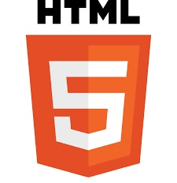

Aprendi que el HTML5 es un estándar que sirve como referencia del software que conecta con la elaboración de páginas web en sus diferentes versiones, define una estructura básica y un código (denominado HTML) para la definición de contenido de una página web, como texto, imágenes, vídeos, juegos, entre otros
es una forja para alojar proyectos utilizando el sistema de control de versiones Git. Se utiliza principalmente para la creación de código fuente de programas de ordenador. El software que opera GitHub fue escrito en Ruby on Rails.
 https://carontestudio.com/blog/listado-de-etiquetas-html/
https://carontestudio.com/blog/listado-de-etiquetas-html/